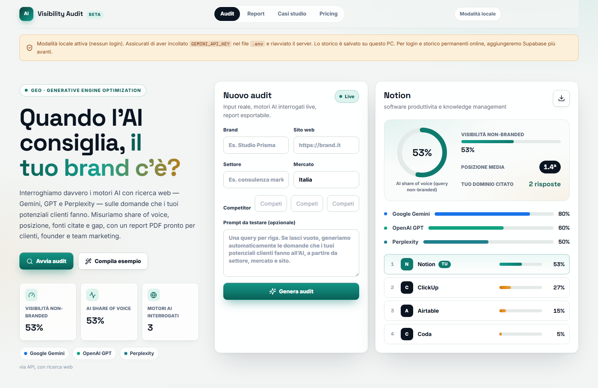

Generative Engine Optimization · AEO & AI Search Analytics
Measuring brand visibility inside AI answers — with variance control, not single-prompt guesswork.
Public case-study and methodology showcase for AI Visibility Audit (private commercial application). Covers multi-engine live grounding (Gemini, OpenAI GPT, Perplexity, Claude), Source Gap analysis, GA4/Search Console baselines, and AI crawler log governance.
1. Live Product Interface & Real Multi-Engine Audit: Notion
Unbranded discovery benchmark across Google Gemini, OpenAI GPT, and Perplexity (Italian market, productivity & knowledge management category vs. ClickUp, Airtable, and Coda). Branded queries are tracked separately and excluded from Share of Voice.


2. Live-Verified 5-Brand AI Crawler Audit (robots.txt & /llms.txt)
Verified live on 2026-11-20 across five real SaaS productivity brands. Separating live AI search bots (OAI-SearchBot, PerplexityBot, Claude-SearchBot) from training crawlers (GPTBot, ClaudeBot) is a core upstream GEO governance check.
| Brand | Explicit AI Bot Rules | AI Search Access | UTM Params Blocked | /llms.txt | Operational Takeaway |
|---|---|---|---|---|---|
Asana (asana.com) | Yes · 17 AI bots | Public pages open; gated ebooks blocked | No | 200 OK (24.7 KB) | Most mature explicit AI-agent governance in the set |
Notion (notion.so) | Partial (blocks Amazonbot) | Open (11 sitemaps incl. /md/sitemap.xml) | No | 200 OK (6.8 KB) | Publishes dedicated Markdown sitemap; blocks SEO scrapers |
ClickUp (clickup.com) | Wildcard (*) | Open | Yes (*utm_*, *fbclid=) | 200 OK (8.8 KB) | Strong crawl-budget hygiene blocking paid-media parameters |
Airtable (airtable.com) | Wildcard (6 rules) | Open | No | 404 | Minimalist config without AI bot segmentation |
Coda (coda.io) | Wildcard (6 rules) | Open (blocks /docs workspaces) | No | 404 | Protects user docs; no explicit AI crawler policy |
3. Measurement Pillars
Multi-Run & Prompt-Variant Stability
Grounded in Variance-Aware LLM Annotation (arXiv 2601.02370): repeating queries 2–3× and across intent paraphrases exposes wording-sensitive gaps instead of reporting noisy single-run scores.
Source Gap as Primary Action KPI
Following Forrester's 2026 B2B buying research, buyers validate AI summaries on third-party sources. Mapping which external domains dominate citations directs Digital PR and review-platform work.
Server Logs Fill the GA4 Blind Spot
AI bots do not execute JavaScript, so GA4 never sees them. Parsing Apache/Nginx or Cloudflare logs across 19 declared AI user-agents links crawling to citations and GA4 referral visits.
Transparent API Cost Ceiling
Live search grounding fees (€0.012–€0.04/call), not tokens, drive audit cost. A decision-grade 3-run monthly baseline across 3–4 engines costs roughly €1.80–€4.80 in public list API fees.
4. What We Deliberately Refuse to Report (Anti-Roadmap)
No Fabricated "Prompt Volumes"
AI vendors do not publish prompt search volume data. Any exact monthly prompt volume estimate is unverifiable guesswork and excluded by design.
No llms.txt Vanity Score
Empirical studies (Ahrefs, June 2026) found ~97% of llms.txt files receive zero bot discovery requests; tracked as an informational signal only.
Human-Reviewed Editorial Briefs
No autonomous AI CMS publishing. Audits output structured 4-week plans and factual content briefs for human review to protect B2B brand authority.
Explicit Measurement Boundaries
GA4 AI referral traffic is always disclosed as a minimum floor (referrer stripping), and API search responses are distinguished from personalized consumer chat sessions.